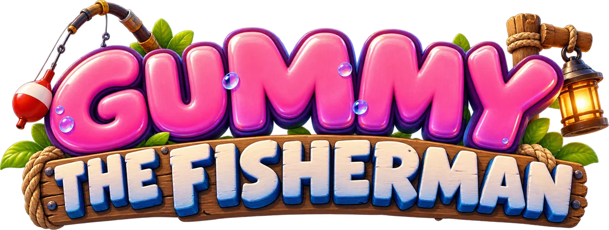

Gummy the Fisherman

Gummy "The FisherMan" is a classroom English grammar game. The players take turns completing sentences. Each right answer helps Gummy reel in a fish, and each wrong answer lets the fish pull Gummy toward the water. There are three rounds (Sunny Pond, Sunset River, Midnight Ocean), and at the end every catch goes on the scale: the heaviest catch wins.
Part of Foxino's games on fugio.co. Its sister game is Defeat the Rob.
Play it: - Production (the main game): fugio.co/fish - Test: gummy-fisherman.fugio.co - Phone: fugio.co/gummy-fisherman-mobile
Downloads: Production v2 · Test v1 · Phone v11
Notes in this section
- How to Play: the rules, and the screens from lobby to podium
- Game Mechanics: fish weight, price, streaks, which fish bites
- Modes and Settings: Team / Solo / 6p, Phone mode, answer times, Developer mode
- Question Packages: all 962 questions in 5 grammar packages
- Fish Index: the 16 fish and the old boot
- Characters: Stella, Foxino, Pix, Ghost, Rob, Gummy
- Versions: how Production, Test and Phone differ
- Assets: art and videos, and where the files are
- Tech and Deployment: code, hosting, build steps
- Ideas and To-do: open questions and next steps
At a glance (Production)
| Players | Team (up to 4), Solo (up to 4, everyone catches their own fish), 6p (6 players: Rob and Gummy join) |
| Rounds | 3: Sunny Pond → Sunset River → Midnight Ocean |
| Turns | every player answers 2 times per round |
| Questions | 5 packages, 962 questions, levels A0–A2 |
| Answer time | slider in the lobby (default 12 s), or a separate time for each player |
| Fish | 16 to discover in the Fish Index (+ an old boot if every answer is wrong) |
| Winner | the heaviest catch on the scale |
| Extras | Review answers + PDF download, Phone mode (join with a QR code), Developer mode |
Parent: AI Games (on fugio.co; company: Foxino)
Back to Home
- Testing History: test sessions, bugs and fixes